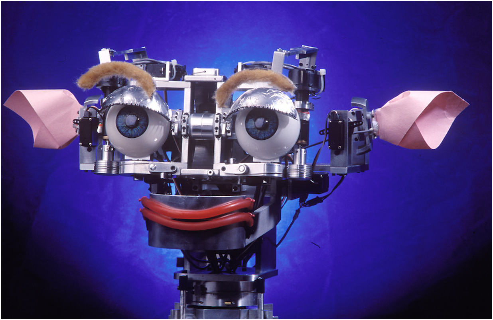

In the realm of robotics, Cynthia Breazeal stands as a trailblazer, known for her groundbreaking work in social robotics and human-robot interaction. Her contributions have not only advanced the field technologically but also explored the profound implications of robots as companions and assistants in everyday life.
Early Career and Education
Cynthia Breazeal earned her Bachelor's degree in Electrical and Computer Engineering from the University of California, Santa Barbara, and her Master's and Ph.D. in Electrical Engineering and Computer Science from the Massachusetts Institute of Technology (MIT). It was at MIT's Media Lab where she began to explore the intersection of robotics, artificial intelligence, and psychology.
The Creation of Kismet
One of Breazeal's most notable achievements is the creation of Kismet, a pioneering social robot developed during her doctoral research. Completed in 1997, Kismet was designed to interact with humans using expressive facial features and vocalizations, aiming to simulate social behaviors and emotional responses. This project marked a significant step forward in the development of robots capable of engaging emotionally with humans.

Contributions to Social Robotics
Breazeal's work extends beyond technical innovation; it delves into the social and psychological aspects of human-robot interaction. She advocates for designing robots that can build rapport with users, understand and respond to emotions, and adapt to social cues—a crucial aspect for integrating robots into various human-centric environments, including healthcare, education, and homes.
Jibo: The World's First Social Robot for the Home
In 2014, Cynthia Breazeal founded Jibo, Inc., with the vision of bringing social robotics into people's homes. Jibo, the company's flagship product, was introduced as the world's first social robot designed to assist and interact with family members in a personalized and engaging manner. Although the company faced challenges and ceased operations in 2018, Jibo exemplified Breazeal's commitment to making social robots accessible and beneficial to everyday users.
Current Research and Impact
Currently, Cynthia Breazeal continues to influence the field of social robotics as an Associate Professor of Media Arts and Sciences at MIT. Her research focuses on developing robots that can collaborate with humans effectively, understand human intentions, and support social learning in educational settings. Her work has inspired a new generation of researchers and engineers to explore the potential of robots as social companions and assistants.
Legacy and Future Directions
Cynthia Breazeal's pioneering efforts in social robotics have laid a foundation for future innovations in human-robot interaction. Her work challenges us to rethink the role of robots in society, emphasizing empathy, collaboration, and ethical considerations. As technology continues to evolve, Breazeal's vision of integrating socially intelligent robots into everyday life promises to redefine how we interact with and perceive machines in the years to come.
Conclusion
Cynthia Breazeal's career exemplifies the transformative potential of combining robotics with social sciences. Her achievements in developing social robots like Kismet and Jibo have not only pushed the boundaries of technological possibility but also sparked important conversations about the ethical and societal implications of robotics. As we look ahead, Breazeal's ongoing research and advocacy continue to shape a future where robots enhance our lives through meaningful social interactions.